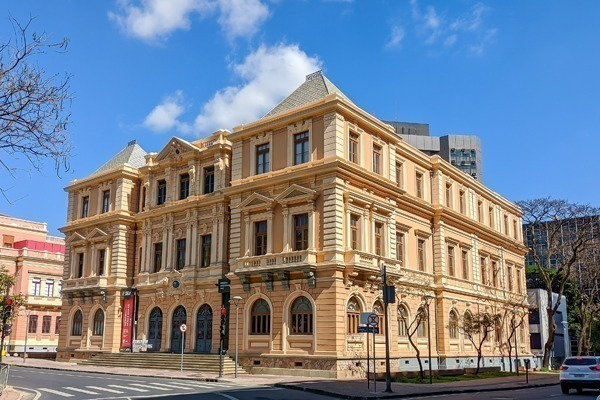
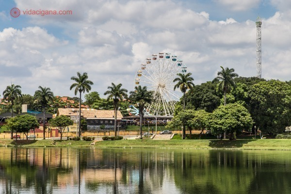
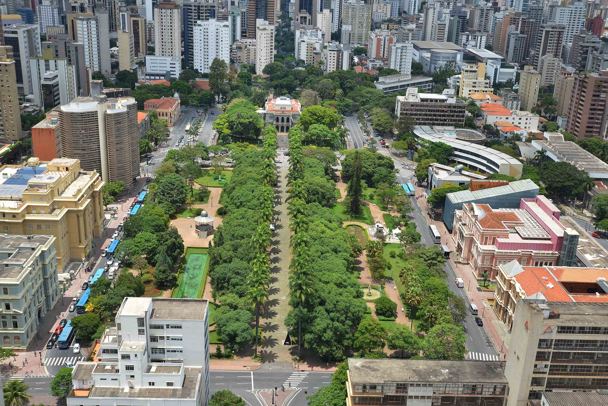

O Memorial Minas Gerais VALE é um ponto turístico que reúne uma riqueza cultural do Estado de Minas Gerais, desde o século XVIII até uma perspectiva futurista contadas de forma original e interativa, em cenários reais e virtuais que se misturam. Além das áreas do museu, conta com um café.
Para quem gosta de diversões e/ou está viajando com crianças, o parque Guanabara é uma boa atração. Um parque de diversões a preço acessível e com várias opções de brinquedos.
Em poucas palavras, o circuito é como um paraíso para quem, assim como eu, é fã de programas culturais. Localizado em uma das praças mais charmosas na região central da cidade, o Circuito Cultural da Praça da Liberdade une arte, cultura e turismo em um único local. São ao menos 22 espaços que formam o circuito, entre eles a Biblioteca Pública Municipal de Minas Gerais, o Centro Cultural Banco do Brasil, a Casa Fiat de Cultura, o Planetário, o Museu Mineiro, entre outros.
